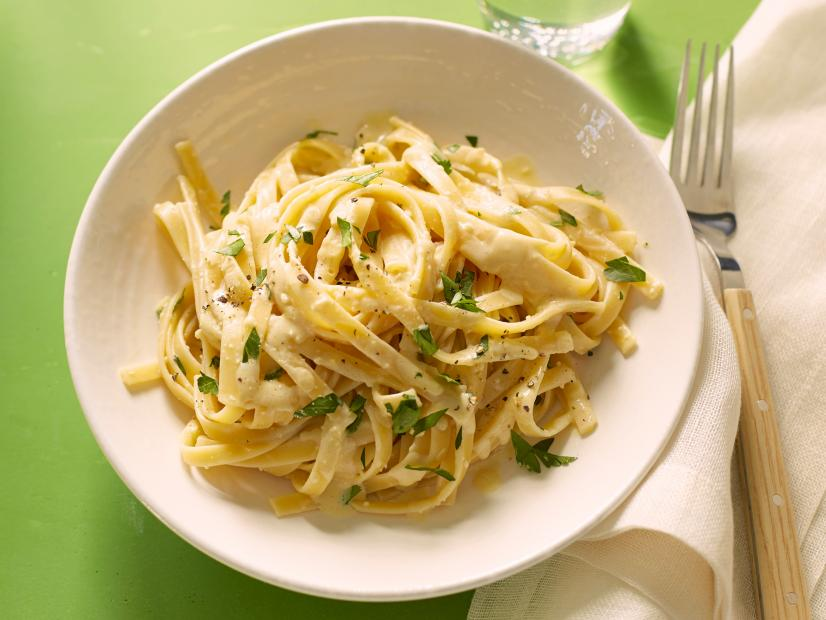

Vegan Fettuccine Alfredo

This vegan fettuccine alfredo tastes decadent,
but the creamy sauce is filled with healthy plant based ingredients.
An easy dinner in under 30 minutes!
Ingredients
- 1 pound fettuccine noodles
- 4 garlic cloves
- 1 small head cauliflower (1 1/2 to 2 pounds)
- 4 tablespoons olive oil
- 1 cup raw unsalted cashews
- 2 cups vegetable broth
- ⅛ teaspoon onion powder
- 1/8 + ¼ teaspoon ground black pepper
- 1 ½ tablespoons smoked paprika
- Pinch nutmeg
- 1 teaspoon kosher salt
- Finely chopped parsley, to serve
Steps
- Mince the garlic. Chop the cauliflower.
- Bring a large pot of salted water to a boil.
Boil the pasta until it is al dente (start tasting a few minutes before the package recommends: you want it to be tender but still a little firm on the inside).
Then drain the pasta and return it to the pot.
- Meanwhile, start the sauce: Heat the olive oil in a large Dutch oven, pot, or saucepan (that has a cover) over medium heat.
Add the cauliflower and cashews and saute for 4 minutes until lightly browned.
Add the garlic and cook for 1 to 2 minutes until fragrant.
Add the vegetable broth, onion powder, black pepper, nutmeg and ½ teaspoon kosher salt.
Bring to a simmer, then cover and cook 6 to 7 minutes on medium high heat until the cauliflower is tender when pierced with a fork.
- Blend the sauce: Carefully transfer the contents to a blender and add the remaining ½ teaspoon kosher salt and ¼ teaspoon more black pepper.
Blend on high until a smooth sauce forms.
- Serve: Pour about 5 cups into 1 pound pasta (1 cup will be left over), or use it to taste.
Top with finely chopped parsley and serve immediately.